vignettes/clustree.Rmd
clustree.RmdClustering analysis is used in many contexts to group similar samples. One problem when conducting this kind of analysis is how many clusters to use. This is usually controlled by a parameter provided to the clustering algorithm, such as \(k\) for \(k\)-means clustering.
Statistics designed to help you make this choice typically either compare two clusterings or score a single clustering. A clustering tree is different in that it visualises the relationships between at a range of resolutions.
To build a clustering tree we need to look at how cells move as the clustering resolution is increased. Each cluster forms a node in the tree and edges are constructed by considering the cells in a cluster at a lower resolution (say \(k = 2\)) that end up in a cluster at the next highest resolution (say \(k = 3\)). By connecting clusters in this way we can see how clusters are related to each other, which are clearly distinct and which are unstable. Extra information about the cells in each node can also be overlaid in order to help make the decision about which resolution to use. For more information about clustering trees please refer to our associated publication (Zappia and Oshlack 2018).
To demonstrate what a clustering tree looks like we will work through a short example using the nba_clusts dataset.
The nba_clusts dataset consists of some basic statistics from 150 NBA players in 2017, 50 from each of three positions (Center, Point Guard and Shooting Guards). This dataset has then been clustered using \(k\)-means with different values of \(k\). For more information see ?nba_clusts. Let’s load the data and take a look:
library(clustree) #> Loading required package: ggraph #> Loading required package: ggplot2 data("nba_clusts") head(nba_clusts) #> Position TurnoverPct ReboundPct AssistPct FieldGoalPct K1 K2 K3 K4 K5 #> 1 Center 10.6 17.4 14.7 50.2 1 2 2 1 2 #> 2 Center 9.6 19.6 16.9 46.8 1 2 2 1 2 #> 3 Center 16.0 14.2 5.4 57.1 1 2 2 1 2 #> 4 Center 17.2 14.9 2.7 58.3 1 2 2 1 2 #> 5 Center 11.7 20.8 4.4 55.7 1 2 2 1 2 #> 6 Center 12.5 17.4 7.9 54.5 1 2 2 1 2 #> PC1 PC2 #> 1 -5.907675 -4.559588 #> 2 -3.398585 -4.015772 #> 3 -14.705825 -3.907384 #> 4 -17.489016 -3.598523 #> 5 -17.705077 -3.455650 #> 6 -13.069032 -3.845442
Here we have a data.frame with player positions and some statistics (turnover percentage, rebound percentage, assist percentage and field goal percentage) as well as some additional columns. These columns contain the cluster assignments from clustering this data using \(k\)-means with values of \(k\) from \(k = 1\) to \(k = 5\).
This clustering information is all we need to build a clustering tree. Each column must consist of numeric values indicating which cluster each sample has been assigned to. To plot the tree we just pass this information to the clustree function. We also need to specify a prefix string to indicate which columns contain the clusterings.
clustree(nba_clusts, prefix = "K") #> Warning: The `add` argument of `group_by()` is deprecated as of dplyr 1.0.0. #> Please use the `.add` argument instead. #> This warning is displayed once every 8 hours. #> Call `lifecycle::last_warnings()` to see where this warning was generated.
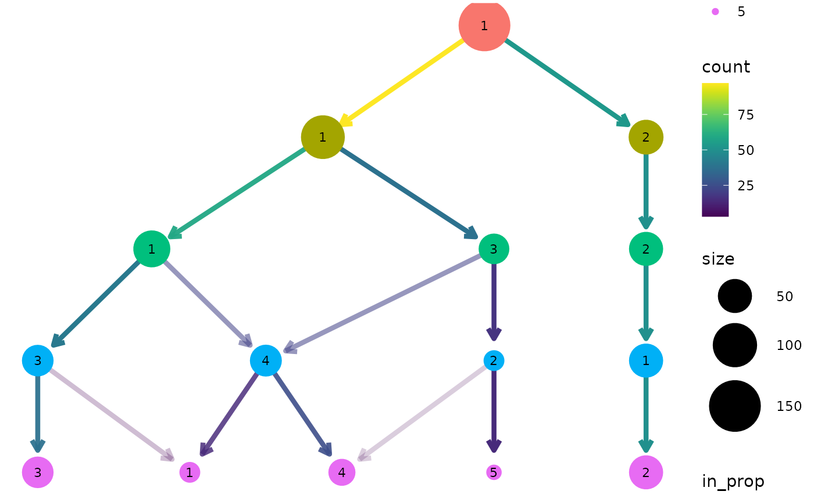
We can see that one cluster is very distinct and does not change with the value of \(k\). This is the Center players which are very different to the other positions. On the other side of the tree we see a single cluster that splits into the two clusters we would expect to see. After this the tree becomes messier and there are node with multiple incoming edges. This is a good indication that we have over clustered the data.
By default the size of each node is related to the number of samples in each cluster and the colour indicates the clustering resolution. Edges are coloured according to the number of samples they represent and the transparency shows the incoming node proportion, the number of samples in the edge divided by the number of samples in the node it points to. We can control these aesthetics by setting them to specific values:
clustree(nba_clusts, prefix = "K", node_colour = "purple", node_size = 10, node_alpha = 0.8)
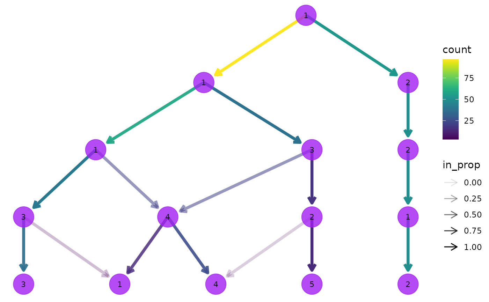
We can also link these aesthetics to other information we have about the samples. All the additional columns in the dataset are available to be added as attributes to the nodes in our tree. Because each node represents multiple samples we need to supply an aggregation function to use as well specifying a column name. Let’s try colouring the nodes according to the rebound percentage:
clustree(nba_clusts, prefix = "K", node_colour = "ReboundPct", node_colour_aggr = "mean")
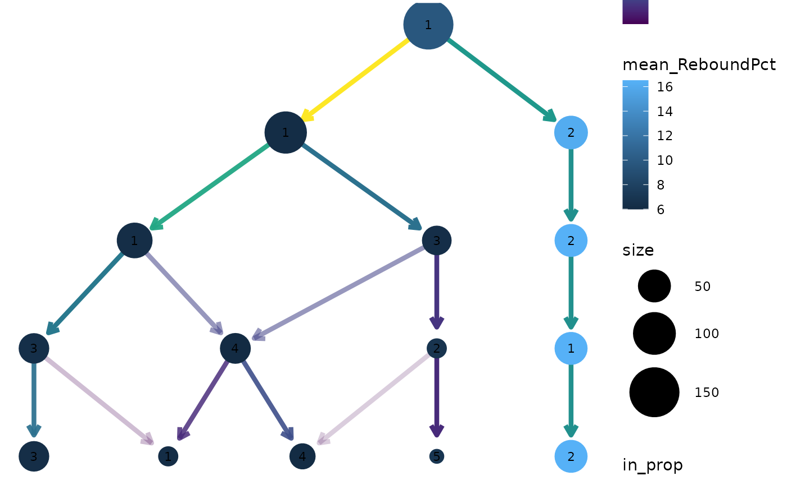
We can clearly see that the distinct cluster containing the Center players has a higher rebound percentage on average compared to the other clusters.
Apart from information in the dataset itself it can useful to display measures of clustering quality as aesthetics. The stability index from the {SC3} package (Kiselev et al. 2017) measures the stability of clusters across resolutions and is automatically calculated when a clustering tree is built. It can be accessed by setting an aesthetic to "sc3_stability" and because it is calculated by cluster we don’t need to provide an aggregation function. For example:
clustree(nba_clusts, prefix = "K", node_colour = "sc3_stability")
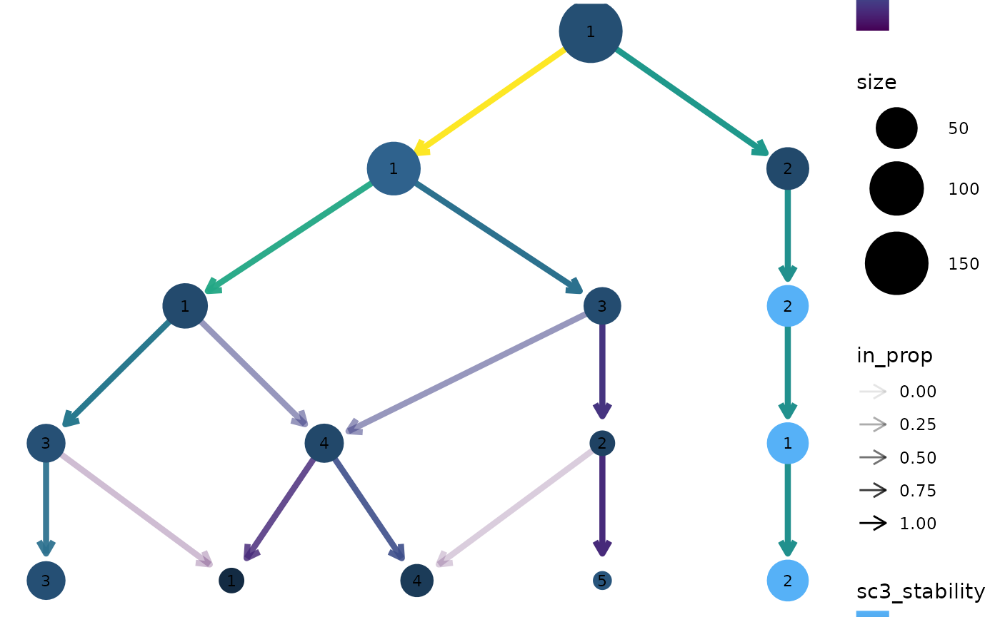
By default the tree is drawn using the Reingold-Tilford tree layout algorithm which tries to place nodes below their parents (Reingold and Tilford 1981). Alternatively we could use the Sugiyama layout by specifying the layout argument. This algorithm tries to minimise the number of crossing edges (Sugiyama, Tagawa, and Toda 1981) and can produce more attractive trees in some cases.
clustree(nba_clusts, prefix = "K", layout = "sugiyama")
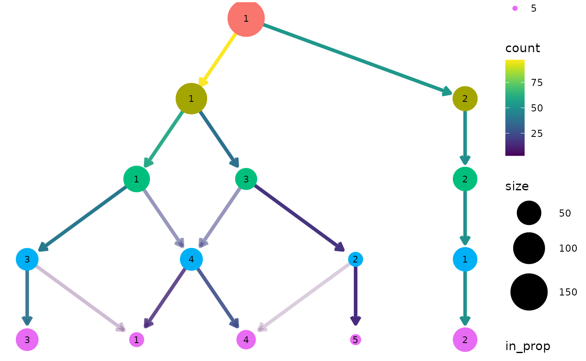
For both of these layout algorithms clustree() uses slightly modified versions of the tree by default. Only the core network of edges, those that are the highest in-proportion edge for a node, are used when creating the layout. In most cases this leads to more attractive trees that are easier to interpret. To turn this off, and use all edges for deciding the layout, we can set use_core_edges to FALSE.
clustree(nba_clusts, prefix = "K", layout = "sugiyama", use_core_edges = FALSE)
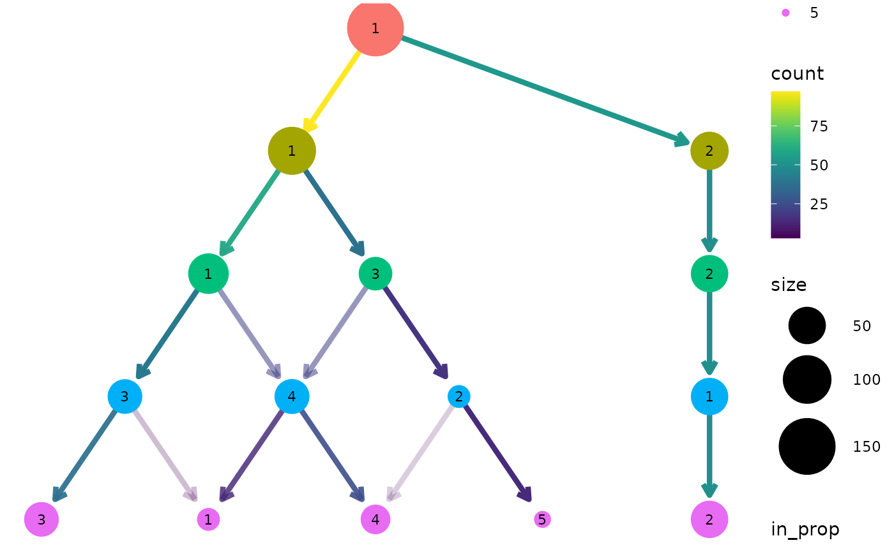
To make it easy to identify clusters the cluster nodes are labelled with their cluster number (controlled using the node_text arguments) but sometimes it is useful to add labels with additional information. This is done the same way as the other aesthetics. Here we label nodes with the maximum assist percentage:
clustree(nba_clusts, prefix = "K", node_label = "AssistPct", node_label_aggr = "max")
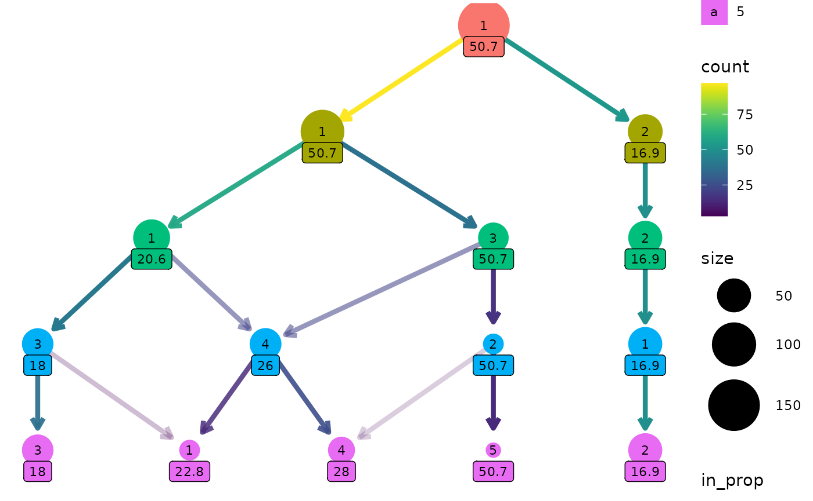
One way this can be useful is if we have assigned labels to the samples. Here is a custom function that labels a cluster if all the players are the same position, otherwise it labels the cluster as “mixed”:
label_position <- function(labels) { if (length(unique(labels)) == 1) { position <- as.character(unique(labels)) } else { position <- "mixed" } return(position) } clustree(nba_clusts, prefix = "K", node_label = "Position", node_label_aggr = "label_position")
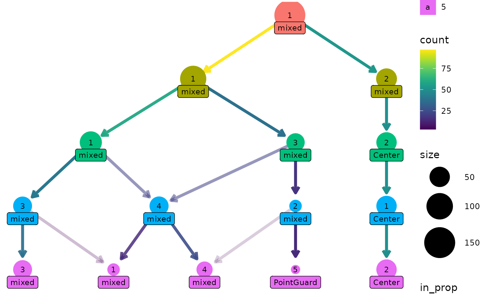
Clustering has become a core tool for analysing single-cell RNA-sequencing (scRNA-seq) datasets. These datasets contain gene expression measurements from hundreds to hundreds of thousands of cells. Often samples come from complex tissues containing many types of cells and clustering is used to group similar cells together. To make it easier to produce clustering trees for these kinds of datasets we provide interfaces for some of the objects commonly used to analyse scRNA-seq data.
The clustree package contains an example simulated scRNA-seq data that has been clustered using the {SC3} and {Seurat} (Satija et al. 2015) packages.
data("sc_example") names(sc_example) #> [1] "counts" "logcounts" "tsne" "sc3_clusters" #> [5] "seurat_clusters"
SingleCellExperiment objectsThe SingleCellExperiment is one of these common objects, used across a range of Bioconductor packages. Let’s have a look at an example, but first we need to convert the example dataset to a SingleCellExperiment object:
suppressPackageStartupMessages(library("SingleCellExperiment")) sce <- SingleCellExperiment(assays = list(counts = sc_example$counts, logcounts = sc_example$logcounts), colData = sc_example$sc3_clusters, reducedDims = SimpleList(TSNE = sc_example$tsne))
The clustering information is held in the coldata slot.
head(colData(sce)) #> DataFrame with 6 rows and 8 columns #> sc3_1_clusters sc3_2_clusters sc3_3_clusters sc3_4_clusters #> <factor> <factor> <factor> <factor> #> Cell1 1 2 3 4 #> Cell2 1 2 3 2 #> Cell3 1 1 1 1 #> Cell4 1 1 1 3 #> Cell5 1 2 3 4 #> Cell6 1 2 2 2 #> sc3_5_clusters sc3_6_clusters sc3_7_clusters sc3_8_clusters #> <factor> <factor> <factor> <factor> #> Cell1 3 2 2 3 #> Cell2 2 1 1 1 #> Cell3 5 4 4 5 #> Cell4 4 3 3 4 #> Cell5 3 2 5 8 #> Cell6 2 1 1 1
We can plot a clustering tree in the same way we did with a data.frame. In this case the clustering column names contain a suffix that needs to be stripped away, so we will pass that along as well.
clustree(sce, prefix = "sc3_", suffix = "_clusters")
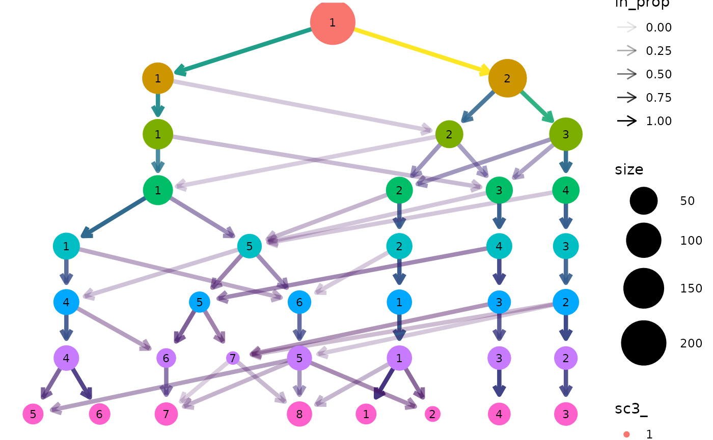
Seurat objectsClustering trees can also be produced directly from Seurat objects. Let’s convert our SingleCellExperiment to Seurat format:
suppressPackageStartupMessages(library("Seurat")) # Create the Seurat object seurat <- CreateSeuratObject(counts = sc_example$counts, meta.data = sc_example$seurat_clusters) # Add the t-SNE embedding seurat[['TSNE']] <- CreateDimReducObject(embeddings = sc_example$tsne, key = "tSNE_") #> Warning: No assay specified, setting assay as RNA by default. #> Warning: No columnames present in cell embeddings, setting to 'tSNE_1:2'
In this case the clustering information is held in the meta.data slot which can be accessed using the [[ operator:
head(seurat[[]]) #> orig.ident nCount_RNA nFeature_RNA nGene nUMI res.0 res.0.1 res.0.2 #> Cell1 SeuratProject 4458 503 503 4458 0 0 0 #> Cell2 SeuratProject 4722 549 549 4722 0 0 0 #> Cell3 SeuratProject 3960 504 504 3960 0 0 0 #> Cell4 SeuratProject 4822 525 525 4822 0 0 0 #> Cell5 SeuratProject 4058 492 492 4058 0 0 0 #> Cell6 SeuratProject 6780 610 610 6780 0 0 0 #> res.0.3 res.0.4 res.0.5 res.0.6 res.0.7 res.0.8 res.0.9 res.1 #> Cell1 1 1 1 1 0 0 0 0 #> Cell2 1 1 1 1 0 0 0 0 #> Cell3 0 0 0 0 1 1 1 1 #> Cell4 0 0 0 0 1 1 1 1 #> Cell5 1 1 1 1 0 0 0 0 #> Cell6 0 0 0 0 1 1 1 1
We can now produce a clustering tree using this object. In this example the prefix for clustering columns is res. but in most cases the default prefix from Seurat will be automatically used.
clustree(seurat, prefix = "res.")
Note: This example uses the newer Seurat object available in version 3.0.0 or greater of Seurat. There is also an interface for the older seurat object but this may be deprecated in the future.
As well as being able to use any additional columns for aesthetics we can also use the expression of individual genes. Let’s colour the nodes in the Seurat tree by Gene730 (a highly variable gene). Again we need to supply an aggregation function.
clustree(seurat, prefix = "res.", node_colour = "Gene730", node_colour_aggr = "median")
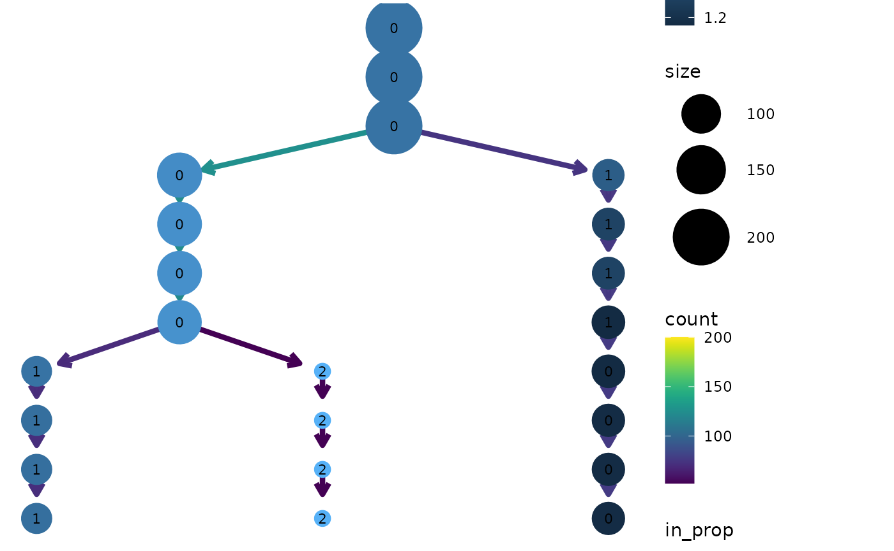
One way to think of clustering trees is that they add an extra dimension to the data that shows how clusters “evolve” over time (increasing resolution). Some times it can be useful to overlay this dimension on other dimensions in the data, particularly those that come from dimensionality reduction techniques. We can do this using the clustree_overlay function:
clustree_overlay(nba_clusts, prefix = "K", x_value = "PC1", y_value = "PC2")
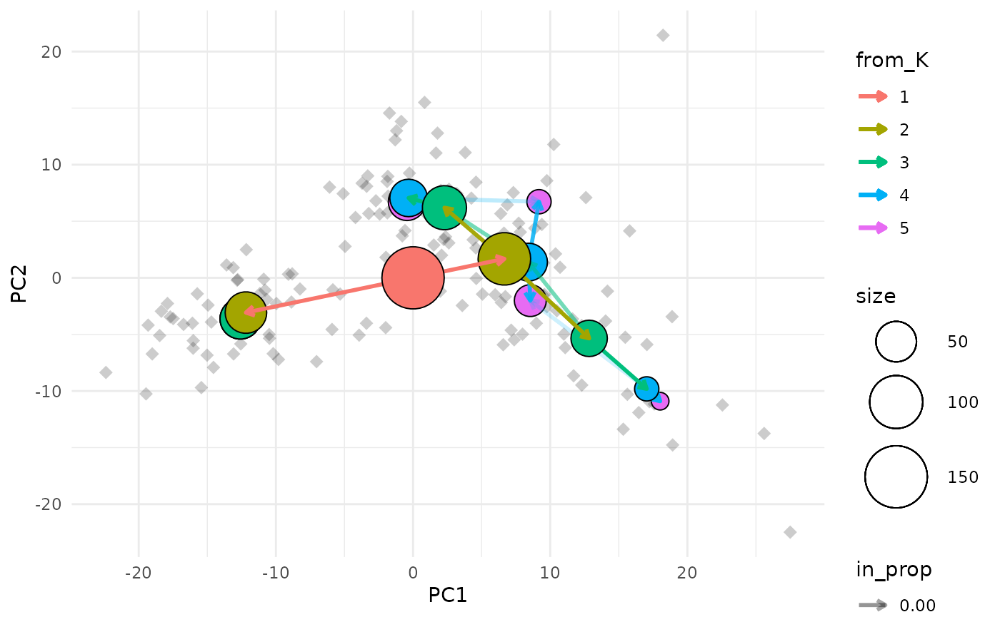
The easiest way to understand this plot is to imagine that you are looking down on the clustering tree from above. The x and y axes are the chosen dimensions in the data and the z axis is the clustering resolution. Each cluster node is placed at the mean x and y values of the samples it contains. We can also see points corresponding to the individual samples.
Due to the way ggplot2 works we can only colour one element in the plot (the node points actually use the fill aesthetic). By default the tree edges are coloured according to the clustering resolution they originate from. Alternatively we can choose to colour the sample points by their highest resolution cluster. The colour of whichever element isn’t using the colour aesthetic can be set using the alt_colour argument.
clustree_overlay(nba_clusts, prefix = "K", x_value = "PC1", y_value = "PC2", use_colour = "points", alt_colour = "blue")
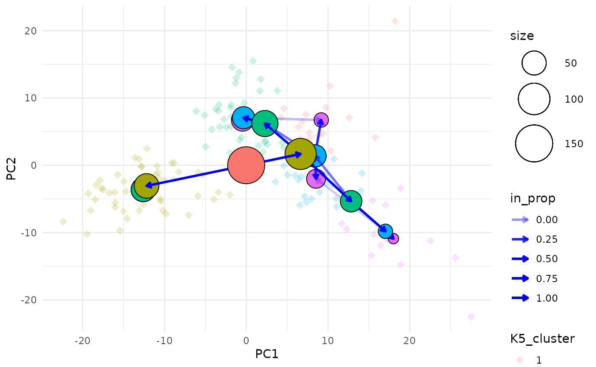
Aesthetics for the clustering tree nodes can be controlled in the same way as for the regular clustree function and there are additional arguments for adjusting the appearance of edges and points.
One of the downsides of this visualisation is that it can be hard to identify the clusters that each node represents as they can often overlap. To make this a bit easier we can label each node with the resolution and cluster ID.
clustree_overlay(nba_clusts, prefix = "K", x_value = "PC1", y_value = "PC2", label_nodes = TRUE)
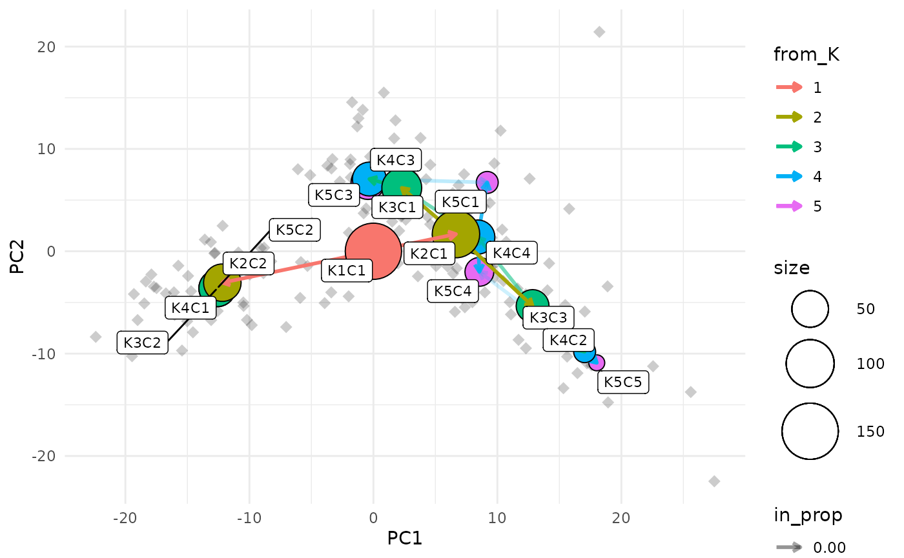
While the main overlay plot show us the tree from above it can also be useful to see it from the side, showing one of the x or y dimensions against the resolution dimension. We can get these views by setting the plot_sides option to TRUE. This will return a list of ggplot objects instead of a single plot.
overlay_list <- clustree_overlay(nba_clusts, prefix = "K", x_value = "PC1", y_value = "PC2", plot_sides = TRUE) names(overlay_list) #> [1] "overlay" "x_side" "y_side" overlay_list$x_side
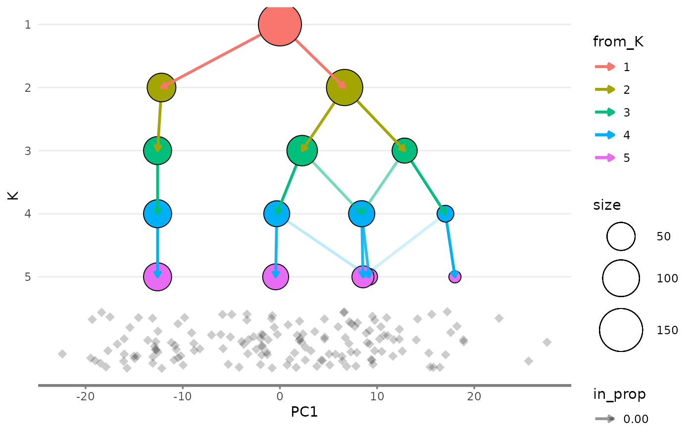
overlay_list$y_side
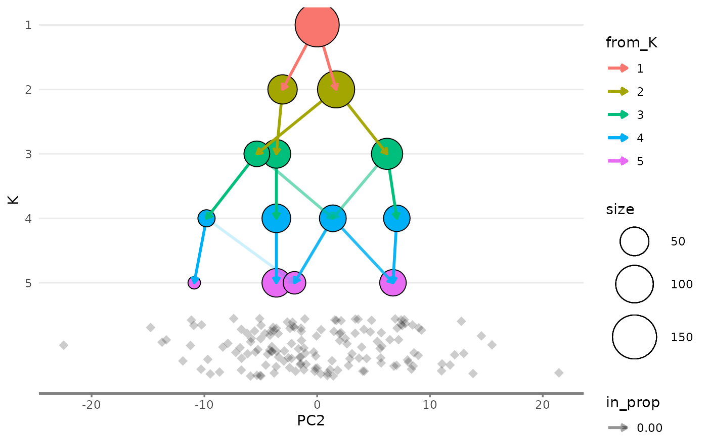
The clustree() function returns a ggplot object which can be modified using functions in the {ggplot2} or {ggraph} packages. For example we could change the colour scales used for the nodes and edges:
clustree(nba_clusts, prefix = "K") + scale_color_brewer(palette = "Set1") + scale_edge_color_continuous(low = "blue", high = "red") #> Scale for 'edge_colour' is already present. Adding another scale for #> 'edge_colour', which will replace the existing scale.
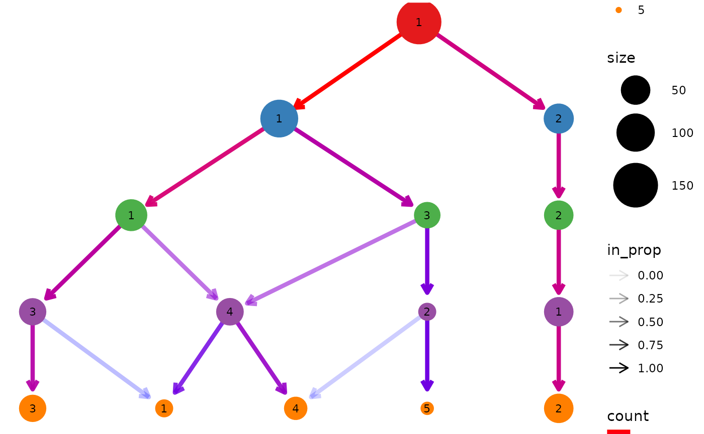
The way ggplot objects is displayed is relative to the size of the plotting window or output file. While the main plot will always fit sometimes legends will be placed outside the visible area. One solution to this is to simply increase the size of the image. An alternative solution is to turn off some of the legends, either by setting some of the aesthetics to static values or by using the guides function. We could also move them to somewhere they might fit better. For example let’s remove the edge legends and move the rest to the bottom:
clustree(nba_clusts, prefix = "K") + guides(edge_colour = FALSE, edge_alpha = FALSE) + theme(legend.position = "bottom")
If you find {clustree} or the clustering trees approach useful for your work please cite our associated publication:
citation("clustree") #> #> Zappia L, Oshlack A. Clustering trees: a visualization for evaluating #> clusterings at multiple resolutions. Gigascience. 2018;7. #> DOI:gigascience/giy083 #> #> A BibTeX entry for LaTeX users is #> #> @Article{, #> author = {Luke Zappia and Alicia Oshlack}, #> title = {Clustering trees: a visualization for evaluating clusterings at #> multiple resolutions}, #> journal = {GigaScience}, #> volume = {7}, #> number = {7}, #> month = {jul}, #> year = {2018}, #> url = {https://doi.org/10.1093/gigascience/giy083}, #> doi = {10.1093/gigascience/giy083}, #> }
Kiselev, Vladimir Yu, Kristina Kirschner, Michael T Schaub, Tallulah Andrews, Andrew Yiu, Tamir Chandra, Kedar N Natarajan, et al. 2017. “SC3: consensus clustering of single-cell RNA-seq data.” Nature Methods 14 (5): 483–86. https://doi.org/10.1038/nmeth.4236.
Reingold, E M, and J S Tilford. 1981. “Tidier Drawings of Trees.” IEEE Transactions on Software Engineering SE-7 (2): 223–28. https://doi.org/10.1109/TSE.1981.234519.
Satija, Rahul, Jeffrey A Farrell, David Gennert, Alexander F Schier, and Aviv Regev. 2015. “Spatial reconstruction of single-cell gene expression data.” Nature Biotechnology 33 (5). Nature Publishing Group: 495–502. https://doi.org/10.1038/nbt.3192.
Sugiyama, K, S Tagawa, and M Toda. 1981. “Methods for Visual Understanding of Hierarchical System Structures.” IEEE Transactions on Systems, Man, and Cybernetics 11 (2): 109–25. https://doi.org/10.1109/TSMC.1981.4308636.
Zappia, Luke, and Alicia Oshlack. 2018. “Clustering trees: a visualization for evaluating clusterings at multiple resolutions.” GigaScience 7 (7). https://doi.org/10.1093/gigascience/giy083.